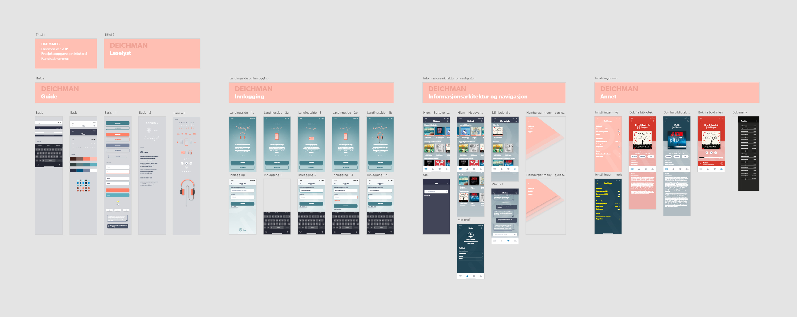

Interaktivt design
Prototype av mobilapplikasjon laget i Adobe XD
Studentprosjekt ved OsloMet, vår 2019
Figur: Prototypen, en bibliotektjeneste for å lytte til e-lydbøker, ble laget i Adobe XD.
Kontekst
I forbindelse med emnet DKDM1400 — Interaktivitet og design ved OsloMet, laget jeg en prototype av et skjermbasert brukergrensesnitt tilpasset smarttelefon. Prosjektoppgaven tok utgangspunkt i en selvvalgt tema og problemstilling.
Tema og mål
I dag kan alle som har bibliotekkort hos Deichman låne og lytte til lydbøker på engelsk via Libby, en app som er tilgjengelig både for Android- og iOS-enheter. Deichman tilbyr også en webløsning for brukere som ønsker å bruke PC. Selv om tilgjengeligheten til e-lydbøker på engelsk har blitt bedre den siste tiden, finnes det i dag fortsatt ingen løsning for de av bibliotekets brukere som ønsker å lytte til lydbøker på norsk. I oppgaven ønsket jeg derfor å skissere et forslag til en smarttelefonapp for denne målgruppen. Jeg valgte å fokusere på unge voksne som ønsker å lytte til e-lydbøker på norsk via folkebibliotekenes tjenester. Som avsender valgte jeg Deichman — Oslo kommunes bibliotek og Norges største folkebibliotek.
Arbeidsprosess
Etter å ha definert tema, problemstilling og målgruppe, begynte jeg med idéarbeidet. Personas ble utarbedet for å bli bedre kjent med målgruppen. Jeg leste også tester og anmeldelser av ulike lydbok-apper for å danne meg et bilde av hva som er å finne på markedet i dag. Jeg valgte å laste ned tre ulike lydbok-apper på min smarttelefon. Hensikten med dette var å få erfaring med ulike grensesnitt. Jeg ønsket å undersøke hvilke funksjoner som jeg selv synes var viktige, samt hvordan ulike visuelle uttrykk kan påvirke brukeropplevelsen.
Prototypen
Med utgangspunkt i utformede personas, skisserte jeg ulike informasjonsarkitekturer. En informasjonsarkitektur bør utformes med tanke på å hjelpe brukere til å fullføre oppgaver eller til å finne den informasjonen de leter etter. Siden appen skulle være en tjeneste levert av et bibliotek, var det ønskelig at grensesnittet skulle inneholde elementer som var gjenkjennbare for bibliotekbrukere. Det var også ønskelig at appen skulle ha god flyt, samt at informasjonsmengden presentert i appen ikke skulle være overveldende.
Refleksjoner
Underveis i utviklingen av formidlingsressursene, stilte jeg meg selv spørsmål om de valgene jeg tok styrket eller svekket det jeg ønsket å formidle. Jeg forkastet de valgene jeg ikke syntes fungerte, og beholdt de jeg syntes formidlet budskapet på en god måte. Dersom dette hadde vært et reelt prosjekt, hadde jeg valgt å involvere brukere i designprosessen.
Figur: Skjermdump som viser prototypens omfang.